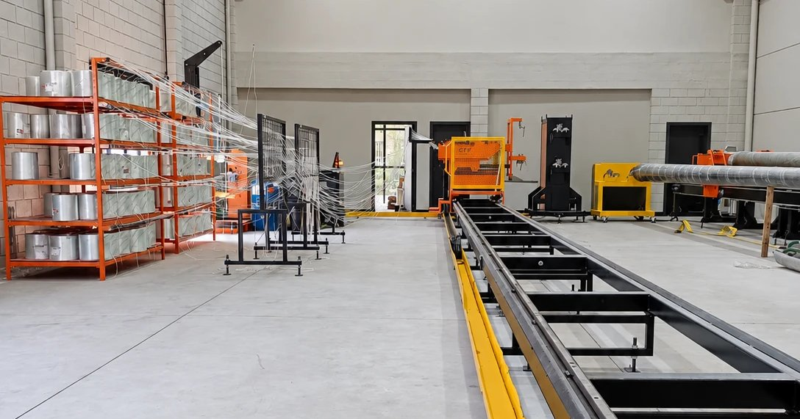

O enrolamento filamentar é o processo usado para fabricar peças tubulares em compósito, como tubos, tanques e postes. Fios contínuos de fibra de vidro, impregnados em resina, são enrolados sobre um molde giratório (o mandril) em camadas e ângulos definidos pela engenharia.
O resultado é uma peça contínua, sem emendas, em que a fibra fica orientada para resistir aos esforços que o poste vai receber em serviço. Veja como o processo funciona na fábrica da Qleve Fiber, em Cachoeirinha/RS.
As oito etapas
- Ordem de produção. Cada lote parte de uma ordem liberada com especificação técnica, desenho e cálculo estrutural do modelo.
- Preparação do mandril. Limpeza, inspeção, desmoldante, cera de carnaúba e filme de proteção sobre o molde, para que o poste se solte sem danos.
- Setup do roving. Os fios de fibra de vidro são alinhados do armário ao carro alimentador e conferidos por checklist.
- Programa CNC. Diâmetros, ângulo, camadas e sobreposição são programados na enroladeira por comando numérico.
- Enrolamento. Os fios impregnados em resina poliéster são depositados em camadas, com reforço na base e na região de engastamento, onde o esforço é maior.
- Cura. O conjunto cura apoiado e alinhado, pelo tempo definido para o sistema de resina.
- Destacamento. O poste curado é extraído do mandril em equipamento destacador, sem esforço sobre o laminado.
- Corte e furação. Base e topo são cortados no comprimento nominal, os furos são feitos e o poste segue para inspeção e ensaios.

Por que o controle de processo importa
Em um poste de compósito, a resistência depende de a fibra estar no lugar certo, na quantidade certa e bem impregnada. Por isso o processo é controlado em cada etapa:
- Resina verificada a cada lote: laudo do fabricante conferido e corpo de prova testado para catalisação, gel e cura antes da produção.
- Setup liberado pela Qualidade: checklists de roving, mandril e programa aprovados antes de cada ciclo.
- Parâmetros travados: ângulo, camadas, sobreposição e velocidades só mudam com autorização da engenharia.
- Rastreabilidade por lote: lotes de resina, catalisador e componentes registrados em cada ordem de produção.
- Não conforme bloqueado: qualquer desvio interrompe o avanço do poste até avaliação.
Com a linha atual, a fábrica tem capacidade para 480 postes por mês em um turno e 960 em dois turnos. Conheça mais sobre a fábrica e sobre os ensaios aplicados aos postes.